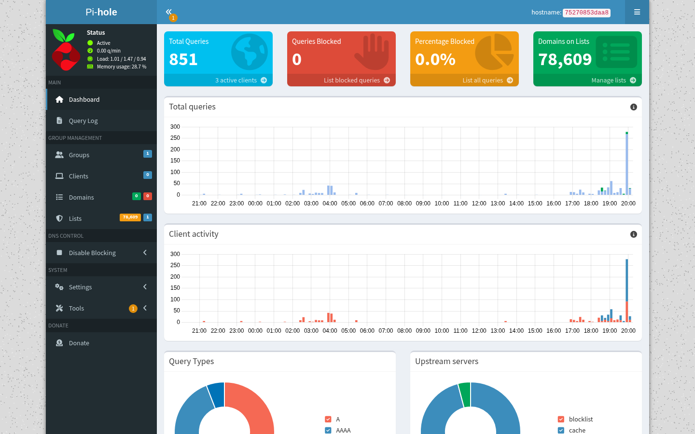
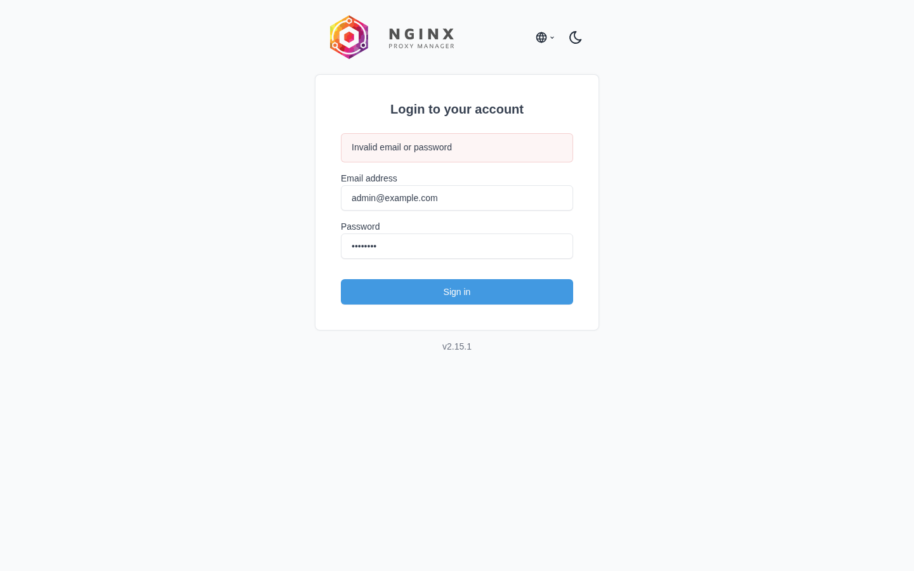
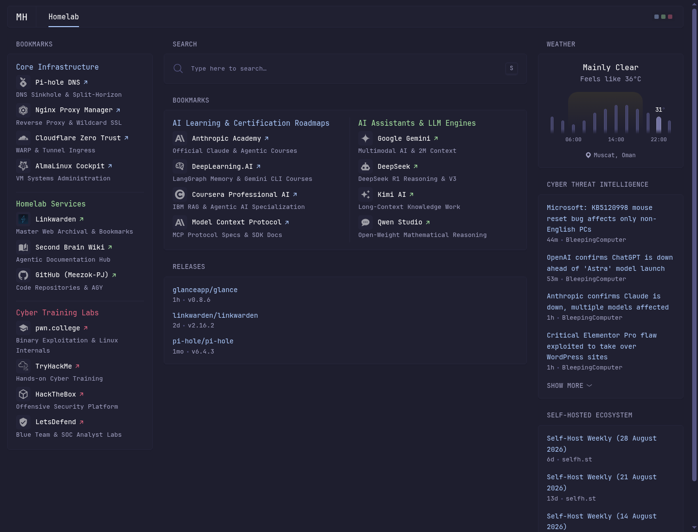
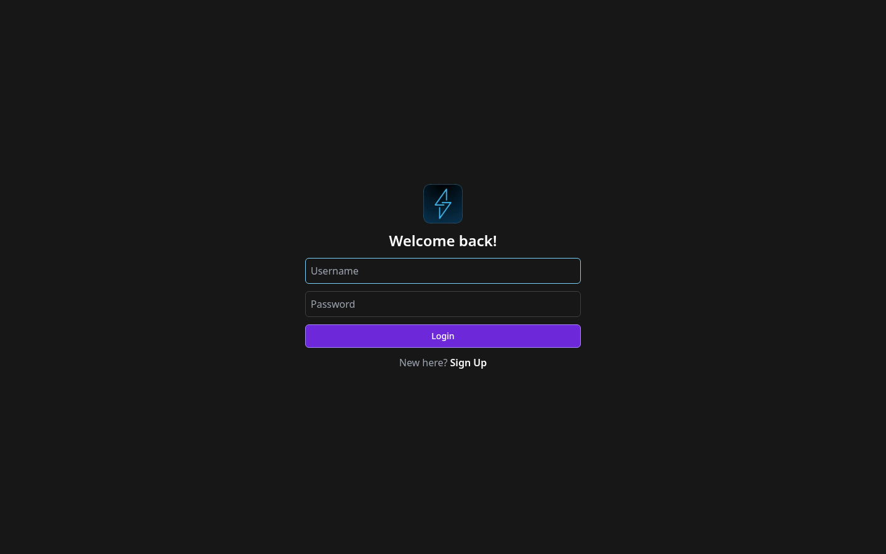
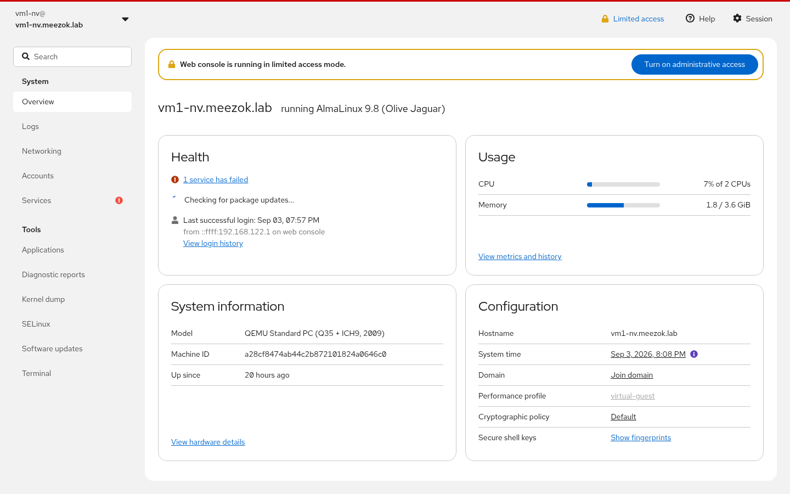

Welcome to My Homelab: A Walkthrough of My Fedora Workstation & Virtualized Lab
Welcome to my personal engineering space! Over the past few months, I set out to build a clean, unified setup that combines a high-performance daily workstation with a self-contained, isolated homelab. In this walkthrough, I want to take you behind the scenes of how everything is put together, the tools I use every day, and the real-world roadblocks I ran into along the way.
1. Why I Built This: The Single-Machine Philosophy
Like many developers and cybersecurity enthusiasts, I used to juggle multiple physical devices: an everyday desktop for web browsing and office tasks, a separate mini-PC humming away in the corner running homelab containers, and spare laptops for experimentation. It worked, but it was noisy, consumed extra power, and required constant context switching between keyboards and monitors.
I wanted a single, unified machine that could handle three distinct roles without compromise:
- My Daily Driver: A responsive Linux desktop with hardware graphics acceleration for smooth 144Hz desktop performance.
- My Coding & AI Lab: A lightning-fast terminal environment where I can write code in Neovim and orchestrate parallel AI coding agents.
- An Isolated Homelab: A rock-solid virtualization layer hosting self-hosted services, personal dashboards, and test environments that run independently without cluttering my host system.
Here is a high-level look at how all these pieces fit together:
flowchart TD
subgraph LAN["Home Network (Sanitized 10.10.10.x)"]
User["My Laptop / Phone / Browser"]
end
subgraph Host["Fedora Workstation (The Foundation)"]
NPM["Nginx Proxy Manager
(Wildcard SSL Gateway)"]
PiHole["Pi-hole DNS Sinkhole
(Private Domain Routing)"]
DevTools["My Daily Tools
(Neovim + Herdr AI Multiplexer)"]
Bridge["KVM Virtual Bridge"]
end
subgraph VM["AlmaLinux 9 Virtual Machine (The Homelab)"]
Glance["Glance Personal Dashboard"]
Linkwarden["Linkwarden Web Archival"]
Cockpit["Cockpit Server Console"]
end
User -->|"Browse *.meezok.lab"| PiHole
PiHole -.->|"Resolves to Host IP"| User
User -->|"Secure HTTPS Request"| NPM
NPM -->|"Smooth Internal Route"| Bridge
Bridge --> Glance
Bridge --> Linkwarden
Bridge --> Cockpit
2. The Foundation: Fedora Workstation as My Daily Driver
For the underlying operating system, I chose Fedora Workstation 44. Fedora strikes the perfect balance for my workflow: it gives me cutting-edge Linux kernels and modern developer software while preserving rock-solid stability.
.',;::::;,'. meezok@fedora
.';:cccccccccccc:;,. -------------
.;cccccccccccccccccccccc;. OS: Fedora Linux 44 (Workstation Edition) x86_64
.:cccccccccccccccccccccccccc:. Host: Z390 AORUS PRO
.;ccccccccccccc;.:dddl:.;ccccccc;. Kernel: Linux 7.1.12-200.fc44.x86_64
.:ccccccccccccc;OWMKOOXMWd;ccccccc:. Uptime: 2 days, 19 hours
.:ccccccccccccc;KMMc;cc;xMMc;ccccccc:. Shell: zsh / bash 5.3.9
ccccc;XMO';cccc;MMM.;cccccccccccccccc' CPU: Intel Core i9-9900K (16 threads) @ 5.00 GHz
ccccc;MMo;ccccc;MMW.;ccccccccccccccc; GPU: NVIDIA GeForce RTX 2080 Rev. A
cccccc;dNMWXXXWM0:;cccccccccccccc:, Memory: 48 GB DDR4 RAM
ccccccccccccccccccccccccccccc:'. Disk: Btrfs root + Dedicated SSD MountsA few key decisions I made during post-installation setup:
- Speeding up package management: Fedora's DNF package manager can feel a bit conservative out of the box. By configuring parallel downloads and fastest mirror detection in
/etc/dnf/dnf.conf, package updates finish in a flash. - NVIDIA acceleration: I enabled the RPM Fusion repositories and installed the proprietary NVIDIA drivers (
akmod-nvidia) so that Wayland runs buttery-smooth and local AI models have access to full CUDA acceleration. - Smart storage with Btrfs: The root filesystem uses Btrfs with transparent compression. This gives me instant snapshots before testing new software, while high-write container volumes live on a dedicated solid-state mount (
/mnt/ssd/docker-data/) to keep my primary disk clean.


3. My Daily Developer Cockpit: Neovim & Herdr
When I sit down to work, I spend almost all my time inside the terminal. I want everything to feel snappy, minimal, and keyboard-driven.
Neovim with Kickstart.nvim
Instead of using heavy, pre-packaged Neovim distributions that hide how things work under multiple layers of abstraction, I started with kickstart.nvim. It gives me a clean, modular setup tailored to my exact needs:
- Language Server Protocol (LSP) for Go, Python, Bash, and YAML with real-time diagnostics and autocomplete.
- Treesitter for instant, context-aware syntax parsing and code highlighting.
- Telescope for fuzzy-finding through files, notes, and git history in milliseconds.
Herdr: Multiplexing My Autonomous AI Coding Agents
One of the most exciting additions to my daily toolkit is Herdr (herdr) — a modern terminal multiplexer built in Rust specifically designed for working with autonomous AI coding agents.
What makes Herdr indispensable for my workflow:
- Detached, persistent sessions: I can kick off an intensive coding task or deep research subagent, disconnect or restart my graphical desktop, and attach right back to the session exactly where it left off.
- Agent state telemetry: Herdr actively monitors what the agent is doing in the background (whether it is executing a tool, thinking, or waiting for my approval) so I never have to guess what my background agents are up to.
Alongside Herdr, I use Superfile (spf) for dual-pane terminal file management and Zsh with Powerlevel10k for an informative, lightning-fast prompt.
4. Virtualization Made Clean: Running AlmaLinux on KVM
Rather than dumping all my homelab containers directly onto my Fedora workstation and cluttering my host libraries, I spin up virtual machines using KVM/QEMU and Virt-Manager.

My primary homelab server is an AlmaLinux 9 Minimal VM (vm1-nv):
- It gets dedicated CPU cores and 4 GB of RAM with dynamic memory ballooning.
- It runs SELinux in full Enforcing mode to maintain an enterprise-grade security posture.
- It runs Podman and Docker to host all my homelab web applications.
By keeping these services inside a virtual machine, I can snapshot the entire VM, test updates, or redeploy from scratch without ever risking my daily desktop.
5. Connecting the Dots: Private Domains & Wildcard SSL
One of my biggest pet peeves in a homelab is having to memorize raw IP addresses and odd port numbers like 192.168.x.x:8080 or 192.168.x.x:3000. I wanted everything to feel like a production internet application with clean domains and green SSL lock icons.
Here is how I connected the pieces together:
Split-Horizon DNS with Pi-hole
I run Pi-hole on the host. Beyond blocking advertisements and telemetry trackers network-wide across 78,000+ domains, Pi-hole acts as my private DNS authority:
- Whenever any device on my network asks for
*.meezok.lab(likelinks.meezok.laborcockpit.meezok.lab), Pi-hole instantly points it to my host reverse proxy.

Nginx Proxy Manager & Wildcard SSL
On the host, Nginx Proxy Manager (NPM) handles all incoming web traffic. With a single wildcard certificate (*.meezok.lab), NPM automatically terminates SSL and quietly forwards requests to the correct service inside the VM.

6. A Tour of the Homelab Services
Here are the services I run daily inside the lab:
Glance: My Personal Command Center (https://links.meezok.lab)
Glance is the heart of my daily workflow. It opens up in the morning as my browser homepage, styled with the sleek Catppuccin Mocha dark theme.

I structured it into three focused areas:
- Column 1 (Core Infrastructure & Cyber Training): Quick links to Pi-hole, Proxy Manager, and Cockpit, alongside hands-on training platforms like pwn.college (for binary exploitation and Linux internals), TryHackMe, HackTheBox, and LetsDefend.
- Column 2 (AI Learning & Daily LLMs): Quick Search bar, AI Learning & Certification Roadmaps (Anthropic Claude courses, DeepLearning.AI LangGraph/Gemini courses, Coursera IBM AI, Model Context Protocol docs) and my daily reasoning engines (Google Gemini, DeepSeek R1, Kimi AI, Qwen).
- Column 3 (Weather & Intelligence): Muscat weather forecast and real-time cybersecurity threat feeds from BleepingComputer and The Hacker News.
Linkwarden: My Research & Web Archival Hub (https://linkwarden.meezok.lab)
Whenever I find an insightful security article, CTF walkthrough, or technical documentation, I save it to Linkwarden. It doesn't just save a bookmark; it captures a complete full-page PDF and readable text copy so I never lose access even if the original website goes offline.

AlmaLinux Cockpit: System Administration Console (https://almalinux.meezok.lab)
For managing the AlmaLinux VM itself, Cockpit gives me a lightweight, modern web console. I can monitor live CPU usage, memory utilization, check system logs, and inspect container health with a single click.

7. Real Troubles Faced Along the Way (The War Stories)
Building this setup wasn't always smooth sailing. Here are the four biggest challenges I ran into and how I solved them:
Trouble 1: The Cross-Bridge 502 Bad Gateway Mystery
What Happened: After setting up Nginx Proxy Manager in Docker and creating a proxy host pointing to my VM's IP, I opened my browser and was greeted with an ugly 502 Bad Gateway.
The Investigation: The proxy manager was running inside a standard Docker bridge network, while the VM was running on KVM's virtual bridge (virbr0). By default, Docker sets its packet forwarding policy to DROP. Packets trying to hop from Docker's virtual bridge across into KVM's bridge were being silently rejected by the Linux kernel.
How I Fixed It: Instead of creating complex and brittle forwarding rules, I switched Nginx Proxy Manager to use network_mode: host in docker-compose.yml. This attached NPM directly to the host's native network stack, allowing it to connect smoothly to the KVM bridge via the kernel's normal output routing. The 502 vanished instantly.
Trouble 2: The Cockpit Infinite Redirection Loop (ERR_TOO_MANY_REDIRECTS)
What Happened: When I proxied Cockpit through NPM so I could access it at https://almalinux.meezok.lab, the browser spun for a moment and then crashed with ERR_TOO_MANY_REDIRECTS.
The Investigation: Cockpit's built-in web daemon listens strictly over HTTPS on port 9090. In NPM, I had set the forward scheme to http. Every time NPM attempted an HTTP connection, Cockpit responded with a redirect to HTTPS, creating an infinite redirect loop! On top of that, Cockpit's security layer blocks reverse proxies unless the domain is explicitly whitelisted.
How I Fixed It:
- In NPM, I changed the forwarding scheme from
httptohttpsand turned on Websockets Support (which Cockpit requires for live graphs and web terminal). - Inside the VM, I added
Origins = https://almalinux.meezok.labandProtocolHeader = X-Forwarded-Prototo/etc/cockpit/cockpit.conf. After restarting the service, Cockpit loaded cleanly with zero redirects.
Trouble 3: The Glance Container Crash Loop
What Happened: After creating my custom glance.yml configuration and launching the container with Docker Compose, the container immediately crashed with: open /app/config/glance.yml: no such file or directory.
The Investigation: In my compose file, I had mounted ./config:/app/config:Z. I had saved the YAML file directly in the root directory (./glance.yml) instead of placing it inside the ./config/ subdirectory. Glance looked inside its internal /app/config/ folder, found nothing, and halted.
How I Fixed It: Moved the file into config/glance.yml and recreated the container. Once in the expected path, Glance booted instantly.
Trouble 4: Container Go TLS Certificate Rejection
What Happened: Glance has built-in site probers that display real-time latency and status badges for homelab links. When I added my internal *.meezok.lab addresses, Glance threw bright red ERROR badges next to all of them.
The Investigation: Glance is written in Go. Go's HTTP client strictly verifies TLS certificates against system root certificates and immediately aborts connections if it encounters a private wildcard certificate that isn't in its trusted store.
How I Fixed It: In glance.yml, I added allow-insecure: true to my internal site prober entries. This instructed Glance's prober to monitor service reachability without aborting on private lab certificates.
8. Final Thoughts and What's Next
Building this hybrid setup proved that you don't need a noisy rack of servers to have a powerful, secure homelab. A single well-architected Fedora workstation can comfortably power your daily productivity, high-end developer tooling, and an isolated enterprise homelab all at once.
My next steps for the lab:
- Automated Security Compliance: Running automated OpenSCAP scans against the AlmaLinux VM to achieve baseline DISA STIG hardening.
- Centralized Telemetry: Adding Prometheus node exporters to pipe CPU and memory metrics from all VMs into a shared Grafana dashboard.
If you're thinking of building a similar setup or experimenting with KVM on Fedora, I hope this walkthrough gives you a helpful roadmap!